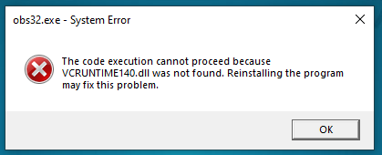
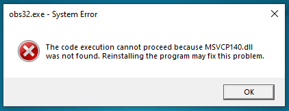

Fix obs yang tidak bisa di jalankan di windows 32/64 bit


Download File
jangan lupa dukung terus channel
Devmaker ID
Like
Komen
Subscribe, dan juga
Nyalakan lonceng nitifikasi untuk mendapatkan update terbaru